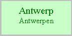
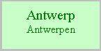

geschiedenis van Antwerpen:
Ontstaan:
De vroege geschiedenis van Antwerpen (voor 1200) is zoals in vele steden moeilijk te achterhalen, door de schaarse bronnen. Ondanks het feit dat "Andoverpis" wel wordt vermeld in oude geschriften (Vita Eligii, begin 8ste eeuw en Vita Amandi), is het toch niet zeker hoe, waar en wanneer de eerste bewoning zich heeft ontwikkeld.
In het prachtige boek "De Stad Antwerpen van de romeinse tijd tot de 17de eeuw , Topografische studie rond het plan van Virgilius Bononiensis 1565" van Voet, Asaert, Soly, Verhulst, De Nave en Van Roey, beschrijft Adriaan Verhulst, hoogleraar RUG, in het hoofdstuk "Het ontstaan en de vroege topografie van Antwerpen van de Romeinse tijd tot het begin van de 12de eeuw"de mogelijke denkpistes.
"Zoals voor vele andere Westeuropese steden die tijdens de eerste helft van de middeleeuwen op spontane wijze als dusdanig gevormd werden moet een verklaring voor de ligging van Antwerpen op een bepaalde plek langs de rechteroever van de Schelde gezocht worden aan de hand van twee factoren: met name de terrein- en bodemgesteldheid en een menselijke factor, in casu de aanwezigheid van een oudere, inz. Romeinse bewoning. Rond beide factoren bestaan niettemin heel wat onzekerheden."
zie ook: Wikipedia: Geschiedenis van Antwerpen
schetskaart van de topografie van het oude stadscentrum met aanduiding van de hoogtelijnen (naar Prims 1927 b, 1933) van de hoogste delen (boven 8m) der stuifzandruggen en van de toponiemen met topografische betekenis. (tekening W.De Schamphelaere) (bron: hoofdstuk "Het ontstaan en de vroege topografie van Antwerpen van de Romeinse tijd tot het begin van de 12de eeuw" uit bovenvermeld boek, van Adriaan Verhulst, hoogleraar RUG.)
In de 10de eeuw was er ter hoogte van de uitsprong "Werf" genaamd een stedelijke nederzetting ontstaan, omgeven door een boogvormige aarden omwalling. In 880 wordt dit nieuw-Antwerpen nog vermeld als vicus, zijnde een niet omwalde handelsnederzetting. Vanaf 995 werd de burcht de zetel van het markgraafschap dat in 1106 bij Brabant ingelijfd werd.
"Zeer waarschijnlijk dus heeft het Duitse rijksgezag, toen het Antwerpen wilde inrichten als militair centrum van een mark, de reeds bestaande nederzetting met haar omwalling als vertrekpunt uitgekozen. Dit zou meteen verklaren waarom de keizerlijke burcht niet op een andere plaats langs de Scheldeoever werd opgericht, bv. op de plaats van de door de Noormannen vernielde versterking ongeveer duizend meter zuidwaarts, waarvan in de late 10de eeuw waarschijnlijk niet veel bruikbare overblijfselen meer waren bewaard gebleven. Het blijft immers merkwaardig waarom het merovingische zwaartepunt van Antwerpen, waar in de 9de eeuw of ten laatste in het begin van de 10de eeuw de door de Noormannen vernielde oudste kerk onder een andere patroonheilige opnieuw werd opgericht om nog gedurende eeuwen als moederkerk voor het hele Antwerpse grondgebied te fungeren, niet het uitgangspunt is geworden voor de verdere ontwikkeling van Antwerpen, maar wel een totaal nieuwe nederzetting duizend meter meer noordelijk, die daar kort na de Noormanneninval van 836 tot ontwikkeling moet zijn gekomen."
Deze nederzetting beschikte aanvankelijk dus niet over een kerk en voor zover hieraan behoefte mocht hebben bestaan, konden de inwoners gebruik maken van de 1000 m zuidelijker gelegen St-Michielskerk. De op het einde van de 10de eeuw opgerichte Sinte-Walburga kapel (bouw tussen ca.980 en midden 11de eeuw) gebeurde waarschijnlijk op het initiatief van de vorst, en had zeker een ingrijpende topografische invloed op de reeds bestaande burgerlijke woningen, net als de latere bouw van andere "castrale" elementen, zoals de vierschaar, verblijfplaats van de markgraaf, ed.
In 1096 is Godfried van Bouillon, hertog van Neder-Lotharingen ook markgraaf van Antwerpen. In 1106 wordt hertog van Brabant Godfried I van Leuven markgraaf van Antwerpen, en wordt het markgraafschap bij het hertogdom Brabant gevoegd. Deze incorperatie betekende praktisch het einde van de eigenlijke functie van dit gebied als militaire grensmark.
Voor 1124 werd een nieuwe kerk ter ere van Onze Lieve Vrouw opgericht net buiten de zogenaamde "ruien", een waterlinie die omstreeks 1100 waarschijnlijk reeds een agglomeratie omsloot.
schetskaart van de topografie van het 10-de eeuwse burchtgebied, met aanduiding van de perceling binnen het burchtgebied en van de voornaamste straten, huizen en gebouwen, naar een opmaak gemaakt voor de rechttrekking der Scheldekaaien (1877-85).
A=Vismarkt, 1=Steen, 2=Steenpoort, 3=St.Walburgiskerk, 4=Vierschaar, 5=Reuzenhuis, 6=Refuge der abdij van Affligem, 7=Oud Vleeshuis, 8=Nieuw Vleeshuis, 9=vermoedelijk verloop der aarden en houten omwalling (10de eeuw), 10=rooilijn van de huizen langs de Jordaens- en Van Dijck-kaai na de rechttrekking, 11=rooilijn van de gevels der nieuwe afdaken langs de Schelde, 12=de huidige kaaimuur. (tekening W.De Schamphelaere) (bron: hoofdstuk "Het ontstaan en de vroege topografie van Antwerpen van de Romeinse tijd tot het begin van de 12de eeuw" uit bovenvermeld boek, van Adriaan Verhulst, hoogleraar RUG.)
De late Middeleeuwen (ca. 1200-ca. 1500)
In bovenvernoemd boek behandeld het hoofdstuk "De late middeleeuwen" van Gustaaf Asaert, afdelingshoofd bij het Rijksarchief te Beveren, de stedelijke ontwikkeling van de Stad.
Hij beschrijft zeer nauwkeurig de verschillende stadsuitbreidingen die onze stad heeft gekend. Op het einde van de 12de eeuw was de burcht geheel met een stenen muur omgeven, en het Steen, een tot gebouw uitgebouwde poort tegenover de Vismarkt, was pas voltooid. Aan de voet van deze "burcht" was een niet omwalde maar door een waterlinie omsloten gebied van ca.20ha ontstaan. (de zognaamde ruien driehoek) Slechts vier bruggetjes verbonden de stad met de overzijde.
In het actuele landschap hebben de thans overwelfde ruien duidelijke sporen nagelaten, zowel luchtfotografisch als door de huidige straatnamen.
Antwerpen voor 1200. De straat namen hier vermeld zijn van latere datum. (tekening W.De Schamphelaere) (bron: hoofdstuk "De late Middeleeuwen" uit bovenvermeld boek, van Gustaaf Asaert, afdelingshoofd bij het Rijksarchief te Beveren)
De eerste stadsuitbreiding rond 1200 nam de buiten de ruien ontstane gebieden mee op in de beschermingsgordel van aarden wallen met stenen poorten op de uitvalswegen.
Antwerpen na de eerste stadsuitbreiding (ca.1200) (tekening W.De Schamphelaere) (bron: hoofdstuk "De late Middeleeuwen" uit bovenvermeld boek, van Gustaaf Asaert, afdelingshoofd bij het Rijksarchief te Beveren)
De tweede stadsuitbreiding van rond 1250 lijft het gebied van ca. 6 ha in, Dries genaamd, dat reeds omwald was en vooral weidegrond omvatte.
Antwerpen na de tweede stadsuitbreiding (ca.1250) Tekening W.De Schamphelaere.
De derde stadsuitbreiding was een gevolg van de stijging van het bevolkingscijfer ten gevolge van de economische expansie van Antwerpen in de 13de eeuw. Zowel Kipdorp en Klapdorp, maar ook het gebied van de St-Michielsabdij werden erin opgenomen.
"In 1294 overleed onverhoeds hertog Jan I, een veertiger die meer dan een kwart eeuw het land van Brabant had geregeerd. Zijn 18-jarige zoon volgde hem als Jan II op. De nieuwe hertog, door opvoeding en huwelijk, een uitgesproken anglofiel, ging een krachtige anti-Franse politiek voeren wat Antwerpen kwetsbaar maakte voor het Vlaanderen van de Dampierres, nog trouw aan de Franse suzerein. Wanneer de bevriende Floris V van Holland in 1295 naar het Franse kamp overging bleef een Hollands ingrijpen langs de Schelde niet langer denkbeeldig. Men begrijpe dat Jan II Antwerpen tot een stevige vesting wilde uitbouwen, tegen Vlaanderen en dezes bastion in Rupelmonde, maar ook tegen de Hollandse invasievloot, wat voor het eerst de gedachte aan een verdiging langs de Schelde deed rijpen.Wellicht waren de vesten van omstreeks 1200 nu in verval geraakt zodat hun militair nut erg twijfelachtig scheen."
Ook na de dood in 1312 van Jan II werd er verder aan gewerkt. Nog tijdens de bouw dacht men al aan de volgende uitbreiding, vandaar dat men geen poorten voorzag in het deel dat toch vlug zijn nut zou verliezen door een volgende uitbreiding. Men bouwde zelfs nu al aan de poorten die later een onderdeel vormde van de vierde stadsuitbreiding. Vooral de waterkant echter werd grondig versterkt. Onder andere de Visverkoperstoren en de Bakkerstoren worden opgericht.
Antwerpen na de derde stadsuitbreiding (1295-1314). tekening W.De Schamphelaere.
De vierde stadsuitbreiding trok de boog door die men aan het Blauwtorenplein had onderbroken. Op die manier kwam het gebied van de St-Jacobskerk ook binnen de bescherming van de muren. Op die manier steeg het stedelijk oppervlak door gracht of vestingmuur omgeven van ca.155 naar meer dan 210ha. In tegenstelling tot het oude stedelijk woongebied van 1200 dat hoofdzakelijk een huizenbebouwing met gesloten woonblokken kent, met weinig open ruimte, de kerkelijke immuniteitsgronden uitgezonderd, vertoont het gebied buiten de vesten van 1200 een ander ruimtelijk beeld. In dit jongere stadsdeel lagen nog veel tuinen, velden en raamhoven. Verspreid over de stad, soms enigszins geconcentreerd, woonden de verschillende beroepsgroepen: schippers, scheepsbouwers, vissers en visverkopers, slagers, kuipers, bakkers, brouwers, timmerlui, zagers en wagenmakers, metselaars, huidevetters, bontwerkers, schoenmakers en zadelmakers, mandenmakers, molenaars, volders, lakenbereiders, linnenwevers, ververs, wolwevers, kooplui, wisselaars, chirurg en barbiers, goud-en zilversmeden, tingieters,...
Het burchtgebied bleef een woonwijk voor patriciaat, overheidspersonages en hun dienstpersoneel.
Antwerpen na de vierde stadsuitbreiding (1314- ca.1410). tekening W.De Schamphelaere.
De zestiende eeuw:
De Gouden Eeuw van de Scheldestad begint op het einde van de 15de eeuw en eindigt vooraleer de 16de eeuw ten einde loopt. De bevolking verdubbelt in deze gouden eeuw (van 47.000 in 1496 tot 100000 in 1568) en aangezien slechts een tiental europese steden omstreeks dezelfde tijd zoveel inwoners hadden, mag men gerust van een metropool spreken, zelfs in die tijd van een megalopolis. De stad barstte uit haar voegen, en men besloot in 1542 om een nieuwe omwalling te bouwen, naar een ontwerp van de Italiaanse krijgsbouwkundige Donato Buoni di Pellezuolli, tegelijk met de aanhechting van ca. 23 ha grond, de zogenaamde Nieuwstad.

Het grootste deel van de verkaveling ervan werd tussen 1543 en 1555 gedaan door de zakenman Gilbert Van Schoonbeke. Ook op andere plaatsen werd in goede perioden druk gebouwd: het nieuwe Stadhuis (1561-1565), het Hanzahuis (1562-1565) en het Hessenhuis (1563-1565). Ook de oprichting van de dwangburcht, de Citadel tussen 1567 en 1571 was ook een ingrijpende uitbreiding, doch gaf geen aanleiding tot ontstaan van nieuwe woonwijken.
latere eeuwen:
Tot de 19de eeuw veranderd er niet veel meer aan de oppervlakte van de stad. In de 17de eeuw kennen we nog een barokke nabloei met oa Rubens, maar het is wachten tot Napoleon besluit om van Antwerpen een militair bolwerk te maken en alzo de stad weer nieuw leven inblaast.


webmaster: Johan Andriessen
Wilrijk Belgium
©2019
{kind=link}
{kind=link}
{kind=link}
{kind=link}
{kind=link}
{kind=link}
{kind=link}